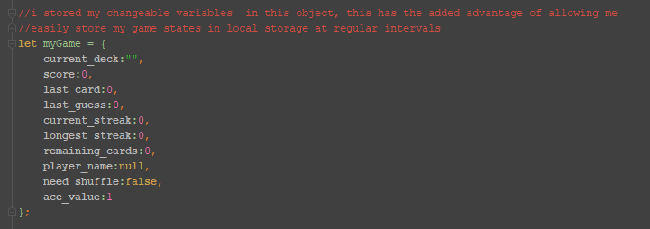

My instructions for creating this game were essentially "go play with an API". I immediately fixated on using an API that deals out cards because of the nearly endless potential. I love playing card games, and initially my vision was much grander for this project, which is why the title implies more than one game. I intend to build on this project in the future.
The game shuffles a deck of cards and simply asks if you think the next card will be higher or lower. The game counts the user's current streak of correct guesses, and also stores the currently-longest streak. The player can set aces to be either high or low depending on what they are used to.
There were several tricky aspects to this project. First was working out the logic of even a simple game, I started with drawing a flow chart to keep track of all possible outcomes. I attempted to keep all my variables in a global JSON state object to imitate how a framework like ReactJS would behave. I store a users name, score, progress and streak record in the browser's local storage so they can return to their game later.
I write all the code in unobtrusive VanillaJS and styled the pages using my own CSS. The Materialize CSS library is referenced, but I am not using any of its built-in classes, it simply normalizes and smooths out the existing elements. I learned a lot from this program and it is also kind of addictive to play.